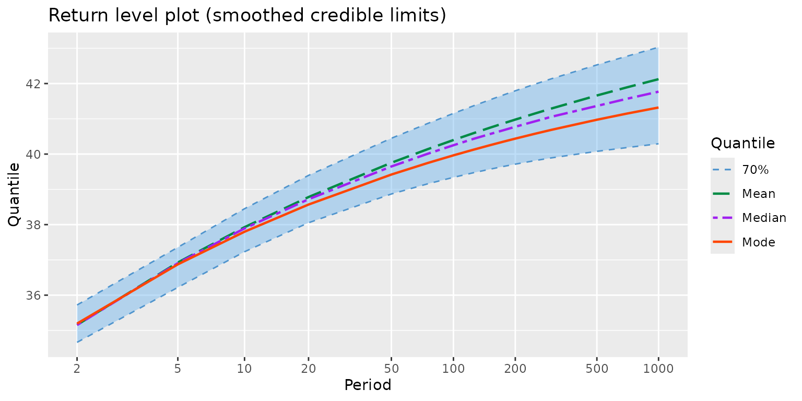
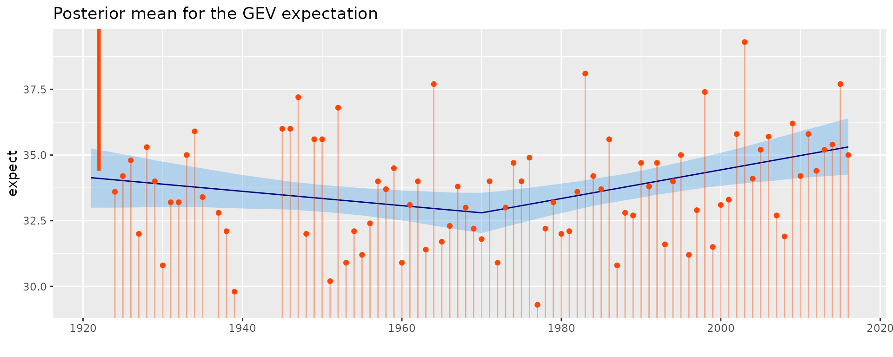

Note
This report was generated with knitr::spin. Do not edit
Rmarkdown file by hand!
Bayes TVGEV for the annual maxima of temperature in Dijon
TVGEVBayes objects
The function TVGEVBayes is very similar to
NSGEV::TVGEV function. It uses the same arguments:
data, Date, response to define
the data frame to use and the name of the variables date and response in
it. The date variable must be either a column with class
"Date" or a column that can be coerced with
as.Date, typically a character giving dates in POSIX
format. The response contains the annual maxima of daily maximal values
(TX) as recorded in Dijon-Longvic (France). The data where provided by
the European Climate Assesment &
Dataset.
The design argument contains R language: a call to a
function returning a design matrix. Then the three formulas
loc, scale and shape specify the
dependence of the GEV parameters on the date. Here we will use a
design for a “regression kink”: the response is a broken
line with a change of slope at a threshold point here chosen as
1970.
df <- within(TXMax_Dijon, Date <- as.Date(sprintf("%4d-01-01", Year)))
fit <- TVGEVBayes(data = df,
date = "Date", response = "TXMax",
design = breaksX(date = Date, breaks = "1970-01-01", degree = 1),
loc = ~ t1 + t1_1970, scale = ~ 1, shape = ~ 1,
seed = 1234)## Warning: There were 1 divergent transitions after warmup. See
## https://mc-stan.org/misc/warnings.html#divergent-transitions-after-warmup
## to find out why this is a problem and how to eliminate them.## Warning: Examine the pairs() plot to diagnose sampling problemsThe output of the previous code chunk was not shown. The warning can require further investigation, see later.
class(fit)## [1] "TVGEVBayes"
methods(class = "TVGEVBayes")## [1] autoplot coef fitted predict print profLik RL summary
## [9] vcov
## see '?methods' for accessing help and source codeSo we can use autoplot.
autoplot(fit) + ggtitle("Posterior mean for the GEV expectation") + theme_gray() The posterior mean of the GEV expectation is shown along with a credible interval on it. Of course, the credible interval should not be confouded with a prediction interval, which would be much larger.
Instead of the GEV expectation, we can similarly plot a quantile.
autoplot(fit, which = "quantile", prob = 0.95) + theme_gray() +
ggtitle("Posterior mean for the GEV quantile with probability 0.95")Now try the summary method
summary(fit)## o Call
## TVGEVBayes(data = df, date = "Date", response = "TXMax", design = breaksX(date = Date,
## breaks = "1970-01-01", degree = 1), loc = ~t1 + t1_1970,
## scale = ~1, shape = ~1, seed = 1234)
##
## o Parameters
## MAP post. mean post. sd post. L post. U
## mu_0 32.0391 32.0418 0.3909 31.2701 32.7965
## mu_t1 -0.0279 -0.0236 0.0164 -0.0546 0.0086
## mu_t1_1970 0.0829 0.0772 0.0288 0.0196 0.1341
## sigma_0 1.7696 1.8273 0.1561 1.5526 2.1666
## xi_0 -0.1930 -0.1706 0.0736 -0.3046 -0.0170To remind of the design, we can apply the call on the data frame
## Block time series
##
## o First block: 1921-01-01
## o Last block: 2016-01-01
##
## date t1 t1_1970
## 1921-01-01 -48.9993155 0.0000000
## 1922-01-01 -48.0000000 0.0000000
## 1923-01-01 -47.0006845 0.0000000
## ... <more rows>
## 2014-01-01 44.0000000 44.0000000
## 2015-01-01 44.9993155 44.9993155
## 2016-01-01 45.9986311 45.9986311
autoplot(des) + ggtitle("Design basis") + theme_gray()The column "t1" defines a linear trend with a slope of
.
The colmun "t1_1970" defines a broken line with a change of
slope located at year
:
the slopes are
before
,
then
.
The parameter names are automatically build by pasting the GEV parameter
name "mu", "sigma" or "xi" with
the name of the variable entering the formula. Note however that the
constant is not taken as "(Intercept)" as in
lm and many other models, but "0". In the
present case, the eventual slope (after year 1970) is the sum of
mu_t1 and mu_t1_1970 because the two basis
functions are non-zero then. So for instance the posterior mean for the
eventual slope is 0.0536
or 0.536
.
We can see the (Bayesian) estimates of the parameters, along with
credible intervals. Insasmuch the credible interval on
mu_t1_1970 does not contain
,
we can say that the two slopes before and after
are significantly different.
We can extract the coefficients with the coef method.
Since we may want either the MAP or the posterior mean, the method has
an ususual argument type which allows to make a choice.
coef(fit)## mu_0 mu_t1 mu_t1_1970 sigma_0 xi_0
## 32.03912611 -0.02790677 0.08289061 1.76955738 -0.19296432
coef(fit, type = "postMean")## mu_0 mu_t1 mu_t1_1970 sigma_0 xi_0
## 32.04182925 -0.02361283 0.07721219 1.82728067 -0.17062777As its name may suggest, the RL method Return Level
plot.
myRL <- RL(fit)
autoplot(myRL) + theme_gray() + ggtitle("Return level plot")The credible limits are empirical quantiles of the MCMC iterates which explains their wiggling aspect. They can be smoothed, although this is only for aesthetical reasons.
myRL <- RL(fit, smooth = TRUE)
autoplot(myRL) + theme_gray() + ggtitle("Return level plot (smoothed credible limits)")
We can use the predict method
## newTimeRange Prob Quant
## 15 2016_2017 0.008 40.81713
## 16 2016_2017 0.005 41.29651
## 17 2016_2017 0.004 41.52736
## 18 2016_2017 0.003 41.83012
## 19 2016_2017 0.002 42.27019
## 20 2016_2017 0.001 43.07133The column newTimeRange indicates the time range (or
period) on which the prediction is computed. Note that Prob
is the probability of exceedance, so in the classical cas where the
extremes are the large value, the interest is mainly on the last rows.
We see that the quantile with an exceedance probability of
is 43.07 Celsius.
We can use the newTimeRange argument of the method
predict for the class "TVGEVBayes". With
partial matching, we can simply use new =
## newTimeRange Prob Quant
## 15 2021_2050 0.008 46.08961
## 16 2021_2050 0.005 46.80702
## 17 2021_2050 0.004 47.17385
## 18 2021_2050 0.003 47.67545
## 19 2021_2050 0.002 48.44431
## 20 2021_2050 0.001 49.95837Again a plot is drawn by using autoplot.
MCMC diagnostics
It is a good practice to carefully inspect the MCMC iterates provided by Stan. For that aim, the excellent Shiny interface provided by the shinystan package is of great help.
library(shinystan)
my_sso <- launch_shinystan(fit$stanFit)This chunk (not executed here) lauches the Shiny interface in the web browser. This allows to get interactively: traceplots and scatterplots for the parameters, convergence disagnostics, and much more.
Censored data, historical data
Censoring by interval
Beside the Bayesian inference the TVGEVBayes function
allows the use of observations that are censored, more precisely:
censored by interval. Instead of the exact value
for the time (year)
,
we only know that the observation for a given year falls in an interval
.
Consequently the contribution of year
in the likelihood
We can take
or
using the Inf special number in R.
This kind of information can be given in TVGEVBayes by
using the optional timeMAXdata argument and giving as value
an object with class "timeMAXdata" constructed with creator
function of the same name. For instance it is believed that annual
maximum for year 1922 in Dijon-Longvic was
 C
since the last value was recorded on 1922-05-24.
tMD <- timeMAXdata("1922_1922" = list("1922-05-24" = c(34.4, Inf)))
class(tMD)## [1] "timeMAXdata"A natural way to represent such censored observations is to plot them as a vertical segment rather than a point.
autoplot(tMD) + theme_gray() + ggtitle("timeMAXdata censored data")A segment reaching the limit of the plotting area should be considered as possibly having an infinite bound as here.
fitCens <- TVGEVBayes(data = df,
date = "Date", response = "TXMax",
timeMAXdata = tMD,
design = breaksX(date = Date, breaks = "1970-01-01", degree = 1),
loc = ~ t1 + t1_1970, scale = ~ 1, shape = ~ 1,
seed = 1234)
summary(fitCens)
autoplot(fitCens) + theme_gray() +
ggtitle("Posterior mean for the GEV expectation")
autoplot(fitCens, which = "quantile", prob = 0.95) + theme_gray() +
ggtitle("Posterior mean for the GEV quantile with probability 0.95")timeMaxdata objects
The name "timeMAXdata" is formed after
MAXdata of the Renext package, although it
is quite different. A timeMAXdata object specifies a number
of periods or time ranges given in the creator through names as in a
list call. The names used must define time ranges (or
periods) with the syntax begin_end. The
corresponding value is itsel a list, with named elements corresponding
to the largest values on the time range. The name of an element is a
character string defining a date, and its value is a vector of length 1
or 2. In the first case the known (uncensored) value is given and in the
second case, the observation is censored and the two limits (possibly
infinite) ar given.
tMD <- timeMAXdata("1922_1922" = list("1922-05-24" = c(34.4, Inf)))Time ranges or periods, dates
The time ranges are given as
begin_end, where begin and
end are year or date.
tMD <- timeMAXdata("1922_1930" = list("1922-05-24" = c(34.4, Inf),
"1927-08-01" = c(36.0, 37.0)))
autoplot(tMD) + theme_gray() + ggtitle("Illustrative timeMAXdata")The provided information is for the years 1922 to 1930 ( years). We tell that the two largest observations are for years 1922 and 1927 and (optionally) provide the full date. In both case the observations are censored by interval. By affirming that these are the two largest observations, we tell that the remaining observations are certainly below, so are below . So these observations will be considered as censored with bounds and .
A timeMAXdata object can similarly contain several
periods which should not intersect. Note that a key function is the
byBloc which aggregates the information by block, with a
default block duration of one year.
byBlock(tMD)## period date y yL yU
## 1 1922_1930 1922-01-01 NA 34.4 Inf
## 2 1922_1930 1923-01-01 NA NA 34.4
## 3 1922_1930 1924-01-01 NA NA 34.4
## 4 1922_1930 1925-01-01 NA NA 34.4
## 5 1922_1930 1926-01-01 NA NA 34.4
## 6 1922_1930 1927-01-01 NA 36.0 37.0
## 7 1922_1930 1928-01-01 NA NA 34.4
## 8 1922_1930 1929-01-01 NA NA 34.4
## 9 1922_1930 1930-01-01 NA NA 34.4
byBlock(tMD, blockDuration ="2 years")## period date y yL yU
## 1 1922_1930 1922-01-01 NA 34.4 Inf
## 2 1922_1930 1924-01-01 NA NA 34.4
## 3 1922_1930 1926-01-01 NA 36.0 37.0
## 4 1922_1930 1928-01-01 NA NA 34.4Note that there are major differences with the MAXdata
structure of Renext
A
timeMAXdatadoes not embed a variable name. The related variable is automatically namedyso thatyLandyUare lower and upper bounds.If several observations are given for a same year, an error is cast when using
byBlock
tMD <- timeMAXdata("1922_1930" = list("1922-05-24" = c(34.4, Inf),
"1922-08-01" = c(36.0, 37.0)))
try(byBlock(tMD))## Error in byBlock(tMD) :
## 'Several MAXdata obs. in the same block. Not allowed yet.Also note that there are some inconsistencies in the vocabulary
because in Renext MAXdata a block
is to be undestood as a time range for which the max observations are
provided, whatever be the duration of this time range. Finally,
MAXdata can not contain censored observations.